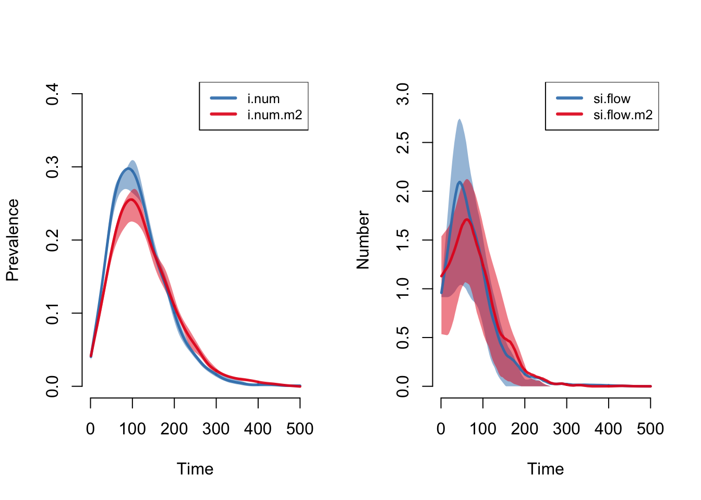

Tutorial 2: SIR Epidemic in a Bipartite Network
Day 2 | Network Models and HIV/STI with EpiModel | Harvard 2017
This tutorial will show how to estimate a dynamic network model for a bipartite network in which the degree distribution varies between modes. A bipartite network structure may be used to represent purely heterogeneous mixing on one attribute as in heterosexual-only models of disease transmission.
Network Model
For the network model parameterization, we will review how to fit a bipartite model with a differential degree distribution by mode, similar to the lab work from previous days.
Initialization
The number in each mode will be 250 nodes.
num.m1 <- num.m2 <- 250
nw <- network.initialize(n = num.m1 + num.m2,
bipartite = num.m1,
directed = FALSE)
nw Network attributes:
vertices = 500
directed = FALSE
hyper = FALSE
loops = FALSE
multiple = FALSE
bipartite = 250
total edges= 0
missing edges= 0
non-missing edges= 0
Vertex attribute names:
vertex.names
No edge attributesDegree Distributions
Next, the mode-specific degree distributions are specified as fractions of each mode that have 0, 1, 2, and 3 or more edges at any one time (momentary degree). Within this bipartite framework, the first mode will represent women and the second men. In our hypothetical empirical data, women exhibit less concurrency than men, but also fewer isolates. The following are those fractional distributions.
deg.dist.m1 <- c(0.40, 0.55, 0.04, 0.01)
deg.dist.m2 <- c(0.54, 0.31, 0.10, 0.05)In our model, we will use a mean degree of 0.66. How do our degree distributions compare to the distribution expected under a Poisson probability mass function with a rate equal to this the mean degree? The dpois function returns the probability mass for degree 0 through 2 and ppois sums the cumulative mass for degree 3+.
pois.dists <- c(dpois(0:2, lambda = 0.66),
ppois(2, lambda = 0.66, lower.tail = FALSE))This barplot compares the two observed and the one estimated fractional degree distribution, each adding to 100%. The degree distribution for men more closely matches that of the Poisson distribution, but still has slightly less concurrency than expected.
par(mar = c(3,3,2,1), mgp = c(2,1,0), mfrow = c(1,1))
barplot(cbind(deg.dist.m1, deg.dist.m2, pois.dists),
beside = TRUE, ylim = c(0, 0.6), col = rainbow(4))
legend("topright", legend = paste0("deg", 3:0),
pch = 15, col = rev(rainbow(4)),
cex = 0.9, bg = "white")
Within a bipartite network with either a differential mode size or degree distribution, the overall number of edges “on offer” from each mode must match. The EpiModel function check_bip_degdist takes as input two mode sizes and two fractional degree distributions and checks whether the total number of implied edges is the same.
check_bip_degdist(num.m1, num.m2,
deg.dist.m1, deg.dist.m2)Bipartite Degree Distribution Check
=============================================
m1.dist m1.cnt m2.dist m2.cnt
Deg0 0.40 100.0 0.54 135.0
Deg1 0.55 137.5 0.31 77.5
Deg2 0.04 10.0 0.10 25.0
Deg3 0.01 2.5 0.05 12.5
Edges 1.00 165.0 1.00 165.0
=============================================
** Edges balanced ** Formation and Dissolution
Since we have not specified any nodal attributes for the network (other than mode itself), the formation model will only consider aspects of the degree distribution. ERGM model terms are available for mode-specific degree with b1degree and b2degree.
For the target statistics, we specify the number of edges from a mean degree as 0.66 (500/2 * 0.66 = 165). Or we can input the numbers directly from the check_bip_degdist output, where the Edges indicates the edges and the m1.cnt the numbers of mode 1 nodes with degree 0 to 3, and m2.cnt the same for mode 2 nodes. For now we will opt to include statistics for the number of persons in each mode who have degree 0 and degree 1. We’ll explore the reasons for this decision below.
formation <- ~edges + b1degree(0:1) + b2degree(0:1)
target.stats <- c(165, 100, 137.5, 135, 77.5)The dissolution model is parameterized the same as the prior example but with a shorter partnership duration.
coef.diss <- dissolution_coefs(dissolution = ~offset(edges), duration = 10)
coef.dissDissolution Coefficients
=======================
Dissolution Model: ~offset(edges)
Target Statistics: 10
Crude Coefficient: 2.197225
Mortality/Exit Rate: 0
Adjusted Coefficient: 2.197225Estimation
The netest function is used for network model fitting.
est <- netest(nw, formation, target.stats, coef.diss)Unable to match target stats. Using MCMLE estimation.For the dynamic diagnostics, we simulate from the model fit. The simulated degree 0 and degree 1 statistics are right on target.
dx <- netdx(est, nsims = 5, nsteps = 500,
nwstats.formula = ~edges + b1degree(0:3) + b2degree(0:3))
dxTo compare simulations against out-of-model predictions, let’s look again at the expected degree 2 and degree 3 for each mode. The simulation means are pretty close to those expectations.
check_bip_degdist(num.m1, num.m2,
deg.dist.m1, deg.dist.m2)Bipartite Degree Distribution Check
=============================================
m1.dist m1.cnt m2.dist m2.cnt
Deg0 0.40 100.0 0.54 135.0
Deg1 0.55 137.5 0.31 77.5
Deg2 0.04 10.0 0.10 25.0
Deg3 0.01 2.5 0.05 12.5
Edges 1.00 165.0 1.00 165.0
=============================================
** Edges balanced ** Graphically, we can see the subset of statistics are right on target over time.
plot(dx, stats = c("edges", "b1deg1", "b2deg1"))
At the equilibrium state, the average edge duration matches its target.
plot(dx, type = "duration")
Epidemic Model
For the disease simulation, we will be simulating an SIR epidemic in a closed population.
Parameterization
The epidemic model parameters are below. In this tutorial, we will use biological parameters for the infection probability per act and recovery rates as equal to demonstrate the impact of mode-specific degree distributions on outcomes. Note that the mode-specific parameters for the infection probability govern the risk of infection to persons in that mode given contact with persons in the other mode.
param <- param.net(inf.prob = 0.2, inf.prob.m2 = 0.2,
rec.rate = 0.02, rec.rate.m2 = 0.02)At the outset, 10 people in each mode will be infected. For an SIR epidemic simulation, it is necessary to specify the number recovered in each mode.
init <- init.net(i.num = 10, i.num.m2 = 10,
r.num = 0, r.num.m2 = 0)For control settings, we will simulate 5 epidemics over 500 time steps each.
control <- control.net(type = "SIR", nsims = 5, nsteps = 500)Simulation
The model is simulated by inputting the fitted network model, the epidemic parameters, the initial conditions, and control settings.
sim <- netsim(est, param, init, control)Analysis
Similar to the first tutorial, plotting the netsim object shows the prevalences for each compartment in the model over time. Interestingly, women (mode 1) have a higher prevalence of disease during the main epidemic period, and more women than men end in the recovered state. Men and women have the same mean degree but men have much higher prevalence of concurrency than women.
plot(sim)
This more clearly show prevalence and incidence by mode. This provides evidence that conditional on mean degree, concurrency increases the risk of transmission but not acquisition.
par(mfrow = c(1,2))
plot(sim, y = c("i.num", "i.num.m2"), popfrac = TRUE,
qnts = 0.5, ylim = c(0, 0.4), legend = TRUE)
plot(sim, y = c("si.flow", "si.flow.m2"),
qnts = 0.5, ylim = c(0, 3), legend = TRUE)
Conceptually, this is explained by comparing two scenarios, one for Sam in which his two partnerships are sequential, and one for Chris in which his two partnerships are concurrent. Both have the same number of partners in 6 months, but if the blue partner is infected with an STI only Chris can transmit back to the red partner. 
It is possible to plot the color-coded static network at various time points during the simulation, as in the last tutorial. This helps to further show that womens’ (circle) risk is dependent on their male (square) partners’ behaviors.
par(mfrow = c(1,1), mar = c(0,0,0,0))
plot(sim, type = "network", col.status = TRUE, at = 50,
sims = "mean", shp.bip = "square")
Extracting the model output to a data frame helps with data analysis outside of the built-in EpiModel functions. Here we show how to calculate the cumulative incidence in each mode over the observed time span.
df <- as.data.frame(sim)
sum(df$si.flow)[1] 221sum(df$si.flow.m2)[1] 210.4With a time step unit of a week, we can calculate the incidence rate per 100 person-years at risk using the following approach. This calculates the time-series of the incidence rates, finds which time step has the maximum incidence, then querying the rate at that time step.
ir.m1 <- (df$si.flow/df$s.num) * 100 * 52
which.max(ir.m1)[1] 129ir.m1[which.max(ir.m1)][1] 199.1489The transmission matrix in bipartite simulations automatically encodes the IDs of the individual nodes with a “F” or “M” prefix for modes 1 and 2, respectively. With this data, it is possible to see chains of transmission throughout the network.
tm <- get_transmat(sim)
head(tm, 15) at sus inf infDur transProb actRate finalProb
1 2 M176 F54 12 0.2 1 0.2
2 2 M218 F168 14 0.2 1 0.2
3 3 M211 F138 43 0.2 1 0.2
4 3 F59 M111 30 0.2 1 0.2
5 3 M5 F36 48 0.2 1 0.2
6 4 F45 M211 1 0.2 1 0.2
7 4 F55 M211 1 0.2 1 0.2
8 4 F186 M176 2 0.2 1 0.2
9 4 M201 F120 14 0.2 1 0.2
10 4 M162 F168 16 0.2 1 0.2
11 4 F22 M246 23 0.2 1 0.2
12 5 F149 M201 1 0.2 1 0.2
13 5 F129 M202 48 0.2 1 0.2
14 5 F83 M201 1 0.2 1 0.2
15 5 M22 F231 14 0.2 1 0.2This data can be used to show, for example, the percent of infections that occur within the first 10 weeks of infection.
mean(tm$infDur < 10)[1] 0.3125Last updated: 2017-06-26 with EpiModel v1.5.0